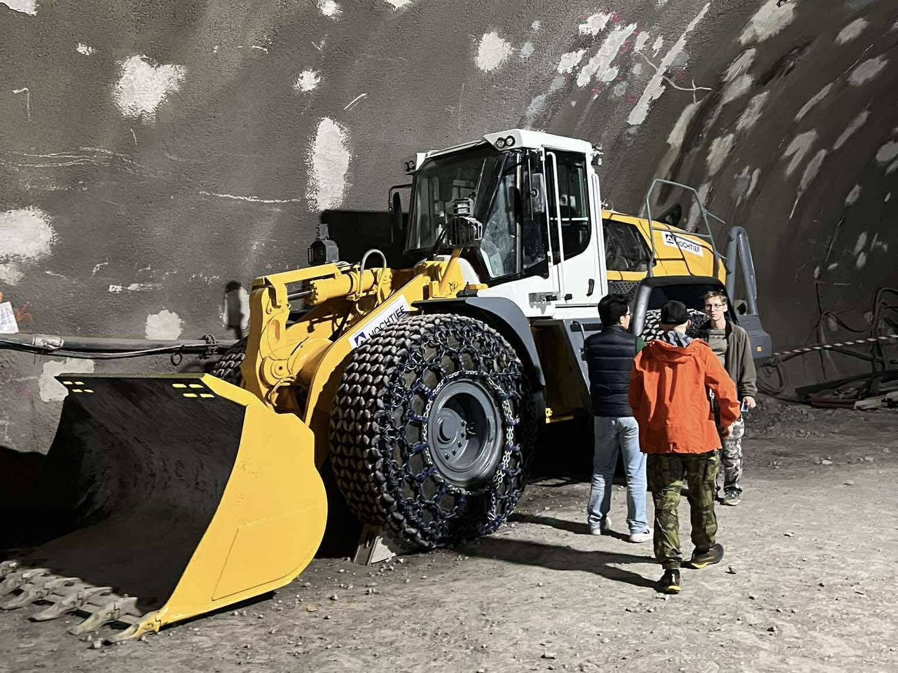

RCHŠ Inženýrství s.r.o. je společnost založena Ing. Richardem Šiserem 27. října 2024, poskytující profesionální inženýřské služby napříč všemi sektory.
Naše firma byla zodpovědná za řešení všech inženýrských problémů spjatými s organizací slavné akce Běh na 2 promile.
Hrajeme klíčovou roli ve stavbě linky D pražského metra.
Email: richardsiser@gmail.com
LinkedIn: linkedin.com/in/richard-siser
GitHub: github.com/DontSayVinegar